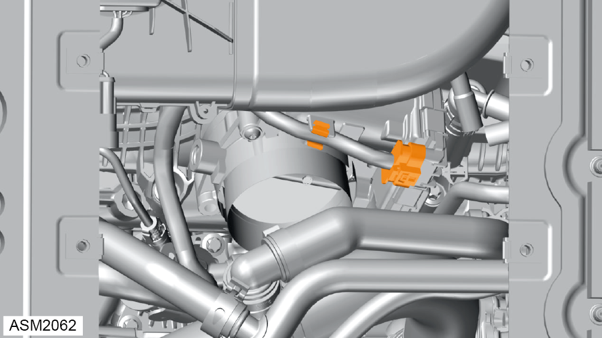
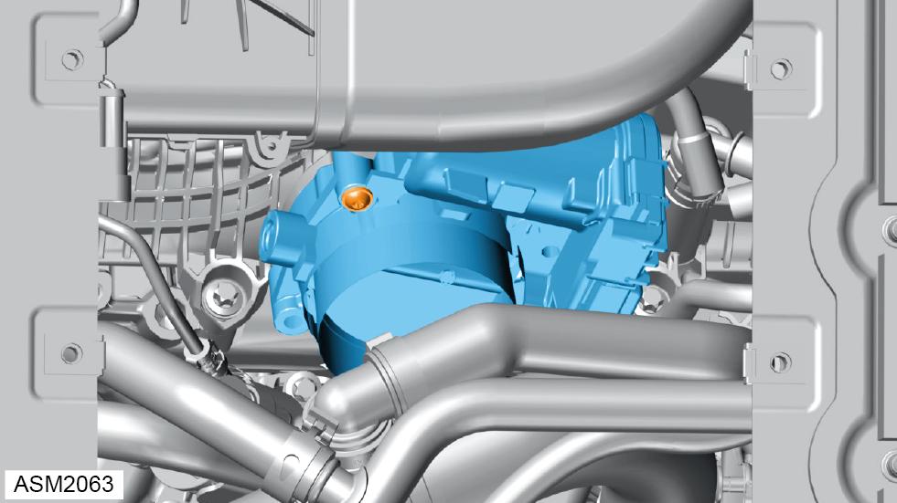
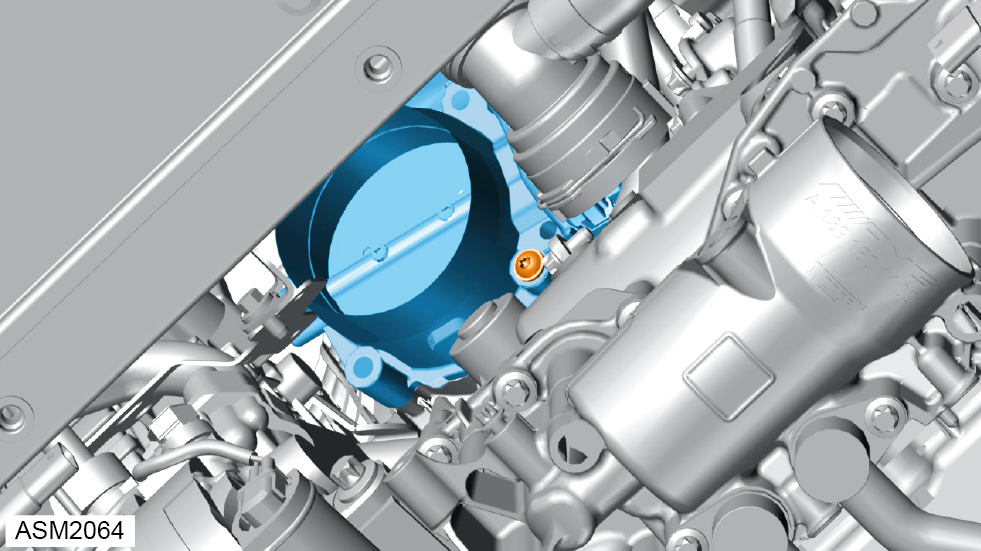

Electronic Throttle Actuator - 4 Cylinder
Print
Operation Code: 42.04.05-02
Removal
- Remove air intake - electronic throttle actuator. Refer to procedure.

- Release clip securing harness to throttle actuator.
 WARNING: Allow engine to cool completely before proceeding to prevent injury.
WARNING: Allow engine to cool completely before proceeding to prevent injury.
- Disconnect harness connector from throttle actuator.


- Remove screws (x2) securing throttle actuator to charge air distributor. Torque 6 Nm.
- Remove throttle actuator.
NOTE: Remove and discard throttle actuator gasket.
Installation
- Installation is the reverse of removal procedure except for the following:
- Renew discarded throttle actuator gasket.
- Perform a diagnostic read and clear memory using Lotus Insight tool.